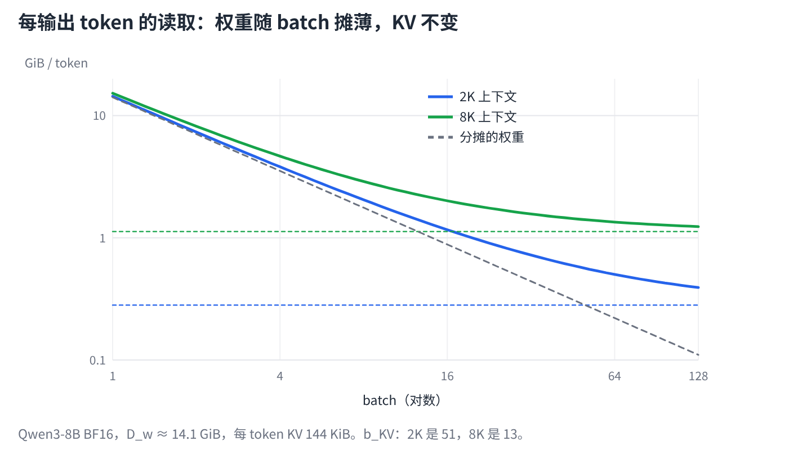
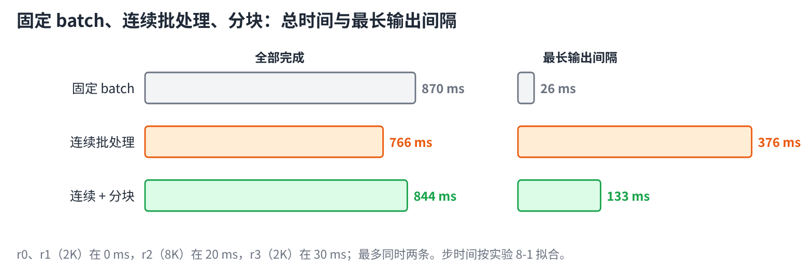
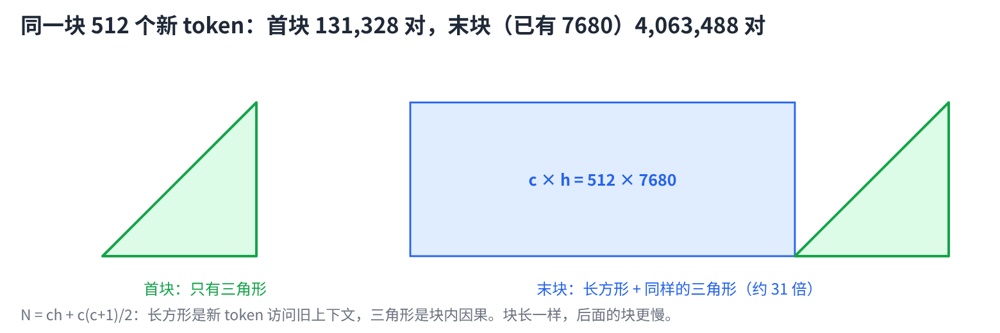
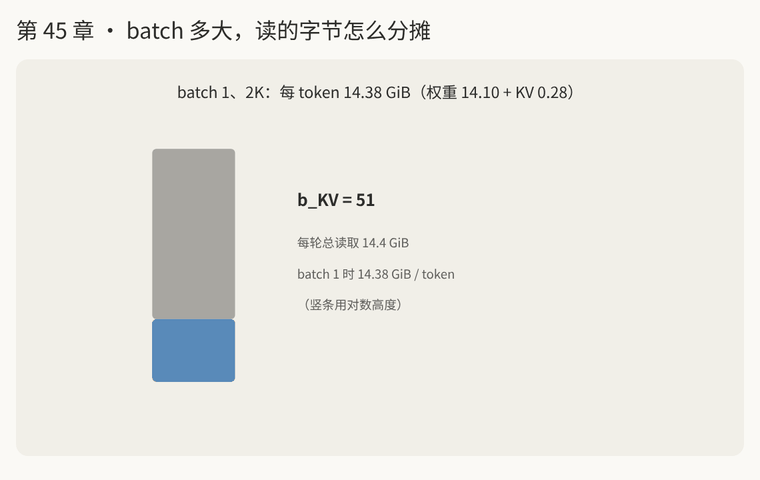

第 45 章 · 批处理与请求调度：多读一次权重做更多事，但别让别人等太久
本地运行
git clone https://github.com/wikieden/ai-infra-from-constraints
cd ai-infra-from-constraints/code/notebooks
pip install jupyterlab torch numpy
jupyter lab ch45_batching.ipynb也可以下载后直接用 VS Code 打开 .ipynb 运行。需要 GPU 的章节在 Colab 里选「代码执行程序 → 更改运行时类型 → GPU」。
本章回答：batch 从 1 涨到 64，每个输出 token 要读的字节为什么降到 1/29？batch 多大以后再加就不划算？连续批处理为什么能缩短总时间，却让某个输出卡了 376 ms？长 prefill 为什么要分块，块越往后为什么越慢？token 预算怎么定？
讲解日期：2026-11-24 · 上一章：第 44 章 推理请求的执行过程与资源需求 · 下一章：第 46 章 KV 缓存的分配、复用与释放
对应原文：materials/ai-infra-book/manuscripts/08-推理优化.md§8.2 L100–L227（图 8-3 到 8-9）
本章缩写：LoRA = Low-Rank Adaptation（低秩 / 适配）· adapter = 附加在基础模型上的可训练参数模块 · token 预算 = 每轮最多处理的 token 数。全部缩写见 缩写与术语表
讲解
第一步：一次权重读取，分摊给多少行（2026-11-24）
类比：班车。 不管坐一个人还是坐满，车都要开一趟（读一次权重）；坐的人越多，每人分摊的油钱越少；但每人自己的行李（KV）还是自己扛。
原文 L104–L139：只计权重读取时 \(I_{\mathrm{weight}} \approx 2b/s_w\)。每轮读取与每输出 token 分摊：
\(D_w \approx 14.1\) GiB（15,136,811,008 B），\(k = 144\) KiB：
| batch | 2K：权重 + KV | 8K：权重 + KV |
|---|---|---|
| 1 | 14.10 + 0.28 = 14.38 GiB | 14.10 + 1.12 = 15.22 GiB |
| 16 | 0.88 + 0.28 = 1.16 GiB | 0.88 + 1.12 = 2.01 GiB |
| 64 | 0.22 + 0.28 = 0.50 GiB（1/29） | 0.22 + 1.12 = 1.35 GiB |

图 45-1 · 对数坐标，batch 每翻倍权重项减半，KV 项不变。
超过 \(b_{\mathrm{KV}}\) 以后，每个 token 读的 KV 已比权重多。时间上 \(T_{\mathrm{step}} \approx \max(bF/P, (D_w + bLk)/\beta)\)；实测 batch 1 → 64：吞吐 37 → 1165 token/s，但首 token 96 ms → 3.29 s、平均间隔 27 → 40 ms。64 条 2K 请求的权重和 KV 合计约 35.7 GB：合批减少每 token 读取，却增加同时驻留的数据。权重进 ROM（第 23 章）后每 token 只剩 \(K\)，batch 摊薄权重的收益消失。
LoRA（原文 L112–L116）：基础权重共用，各任务只附加小矩阵：Q、V 低秩 16、BF16 一套 14.6 MiB，100 套 1.43 GiB。一批里 adapter 越散，低秩部分每组行数越少；能放多少套 adapter 和能服务多少请求是两回事（100 条 8K 上下文的 KV 要 112.5 GiB）。
一句话：权重按 batch 摊薄，KV 不摊；8K 上下文 batch 13 以后读 KV 就比读权重多了。
第二步：连续批处理：空位马上补（2026-11-24）
类比：餐厅翻台。 固定批处理是等一桌人都吃完才收桌；连续批处理是谁吃完谁离席、立刻让门口的人坐；但新客人点了一道要做很久的大菜，桌上其他人的下一道菜就得等。
原文 L165–L187：最多同时两条请求。r0、r1 在 0 时刻到达（2K 输入，输出 8、2 个），r2 在 20 ms 到达（8K 输入、输出 2），r3 在 30 ms（2K、输出 4）。步时间按实验 8-1 拟合：
（2K prefill 94.8 ms、decode 26.26 ms；固定的 26.22 ms 里包括按峰值读一遍权重约 8.4 ms 和逐个提交 kernel。）
| 策略 | 全部完成 | 最长输出间隔 |
|---|---|---|
| 固定 batch（等整组结束） | 约 870 ms | 约 26 ms |
| 连续批处理（r1 结束就接 r2） | 约 766 ms（−12%） | 约 376 ms（r0 等 r2 的 8K prefill） |
| 连续 + 分块（每块 2048，decode 优先） | 约 844 ms | 约 133 ms |

图 45-2 · 左：全部完成时间；右：最长输出间隔。r2 一次做完 8K prefill 要约 376 ms；切成每块 2048，末块约 132.5 ms。
一句话：连续批处理让空位马上有人用，但新请求的长 prefill 会插到老请求两次输出之间。
第三步：分块 prefill：块长一样，后面的块更慢（2026-11-24）
类比：读一本书写笔记。 每次读 20 页（块长一样），但每读一页都要回头对照前面所有内容（旧上下文）；越往后翻，要对照的越多。
原文 L191–L214：块里 \(c\) 个新 token，已有上下文 \(h\)：
\(c = 512\)：首块 131,328 对（全是块内三角形）；8K 输入的末块已有 7680 个旧 token，4,063,488 对，约 31 倍。投影和 FFN 每块工作量基本相同，实测末块比首块慢约 39%（25.3 → 35.1 ms）。

图 45-3 · 块越小，已有请求越早得到下一次执行；但每个小块都要重新读一遍那层权重（256 拆成两个 128，FFN 一层 288 → 576 MiB）。
一句话：调度器先排已有请求的 decode，再用剩下的预算处理一块 prefill；块长要按允许的输出间隔反推。
第四步：token 预算和执行形状（2026-11-24）
类比：电梯限载。 一趟多带人，门口排队的人少等；但电梯里已有的人到下一层的时间也变长了。电梯还只有几种"标准车厢"，17 个人也得坐 32 人的那节。
原文 L218–L224：
- 形状补齐：只预捕获 16 行和 32 行两种 CUDA Graph，17–32 行都按 32 行算；为 17 行另捕获一张图，省 15 行补零，但要准备时间和常驻缓冲。
- 回放记录：六条请求每 80 ms 到达；每轮 token 上限 512 → 8192：后到请求排队从约 149 ms 降到不足 0.1 ms，最长输出间隔从约 32 增到 183 ms。
两步定预算：先按允许的输出间隔定一轮最多多久，再结合上下文长度和预设形状换算成能处理的新 token 数（上下文越长，同样时间里能处理的新 token 越少）。
场景代码：vLLM 打开分块 prefill，用 max_num_batched_tokens 设每轮 token 预算（真实 API）：
from vllm import LLM
llm = LLM(model="Qwen/Qwen3-8B",
enable_chunked_prefill=True, # decode 优先，长输入切块
max_num_batched_tokens=4096, # 每轮 token 预算
max_num_seqs=64) # 同时活跃的请求上限
一句话：token 预算越大，新请求越早离开队列，已有请求等下一次输出越久；按输出间隔上限反推预算。
动画演示：batch 多大，读的字节怎么分摊

可交互版：animations/45-batching.html（滑块：batch 1–128，对数；上下文 1K / 2K / 8K / 32K）。
怎么看：
- 一根竖条分两段：分摊的权重 \(D_w/b\)（灰）和本请求的 KV \(Lk\)（蓝）（第一步）；
- 两段一样高时标出 \(b_{\mathrm{KV}}\)；
- 右边是每轮总读取 \(D_w + bLk\) 和 batch 1 的倍数；
- 播放：2K 下 batch 1 → 16 → 51 → 128，再切到 8K（\(b_{\mathrm{KV}}\) 降到 13）。
练习与作答记录
题 1（第一步）：\(D_w = 30\) GB、每 token KV 200 KiB、上下文 4K。\(b_{\mathrm{KV}}\) 是多少？batch 8 时每输出 token 读多少 GB？
作答记录：（待作答）
题 2（第三步）：块长 \(c = 1024\)，已有上下文 \(h = 0\)、\(4096\)、\(15360\) 时各多少对？末块是首块的几倍？
作答记录：（待作答）
题 3（第二步）：用本章的步时间模型，一条 4096 token 的输入一次做完 prefill 要多久？切成两块各 2048（第二块 \(h = 2048\)）各要多久？
作答记录：（待作答）
原书练习 8-1、8-2（L153、L226）。想多练可以做。
口诀
班车开一趟摊油钱，行李各扛各的；八 K 上下文坐十三人就行李比车重；
翻台谁吃完谁走，新客点大菜大家等；
读书越往后越要回头对照，块长一样后块慢；
电梯多带人门口少等，车里的人到下一层更晚。
本章复习卡片
I157（\(d(b, L) = D_w/b + Lk\) 与 \(b_{\mathrm{KV}}\) = 51 / 13；LoRA 一套 14.6 MiB）、I158（固定 / 连续 / 分块：870 / 766 / 844 ms 与 26 / 376 / 133 ms）、I159（块内配对 \(ch + c(c+1)/2\) 与 token 预算的两步法）。练习做完后，按答错、卡住的地方再补。
附录 · 延伸阅读
留给以后深入学习用，不影响本章主线。★ 是建议先读的。
推荐阅读
| 读什么 | 读哪里 | 读它为了什么 |
|---|---|---|
| ★ AII 第 8 章 | §8.2 L100–L227 | 本章原文 |
| ★ Yu 等，Orca（OSDI 2022） | 迭代级调度 | 连续批处理的出处 |
| Agrawal 等，Sarathi-Serve（OSDI 2024） | chunked prefill | 分块与 decode 优先 |
| Zhu 等，NanoFlow（2024） | 算子内流水 | 小块的读取开销 |
| Chen 等，Punica；Sheng 等，S-LoRA | 多 adapter 服务 | LoRA 批处理 |
| 第 25 章 提交、搬移与同步 | 计时 | 步时间拟合的口径 |
数学原理
- 分摊：\(D_w/b\) 随 \(b\) 反比下降，\(Lk\) 不变。
- 因果配对：\(\sum_{i=1}^{c}(h + i) = ch + c(c+1)/2\)。
- 线性拟合：步时间 = 固定 + 每 token + 每配对。
公式清单
| 公式 | 意思 |
|---|---|
| \(I_{\mathrm{weight}} \approx 2b/s_w\) | 只计权重时的强度 |
| \(d(b, L) = D_w/b + Lk\) | 每输出 token 读取 |
| \(b_{\mathrm{KV}} = \lceil D_w/(Lk) \rceil\) | KV 读取追上权重 |
| \(T_{\mathrm{step}} \approx \max(bF/P, (D_w + bLk)/\beta)\) | 一轮时间 |
| \(N_{\mathrm{pair}} = ch + c(c+1)/2\) | 分块注意力 |
代码对照：把本章的数字用代码算一遍
代码
ai-infra/solutions/chapter-code/ch45_batching.py，测试tests/test_ch45.py：
bash cd ai-infra/solutions/chapter-code uv run python ch45_batching.py uv run pytest tests/test_ch45.py
| 讲义 | 写法 | 跑出来 |
|---|---|---|
| 第一步 | per_token_read_gib(b, L)、b_kv(L)、lora_mib() |
14.38 → 0.50 GiB；51 / 13；14.6 MiB |
| 第二步 | step_ms(new, pairs) |
94.8 / 26.26 / 376 / 132.5 ms |
| 第三步 | chunk_pairs(c, h) |
131,328 / 4,063,488 |
代码里才看得到的 3 件事：
- 步时间模型的三个系数是从 batch 1 实测拟合的：它同时复现 2K prefill 的 94.8 ms 和 decode 的 26.26 ms。
- decode 一步的"配对"是 1 × 上下文长度：一个新 token 看全部旧 token。
- LoRA 的 V 投影是 4096 → 1024（8 个 KV 头 × 128），所以 Q 和 V 的低秩矩阵大小不同。
自己改一改（不影响练习答案）：
- 用
step_ms自己写一个两条请求的调度模拟器，复现 870 / 766 / 844 ms。 - 给
per_token_read_gib加前缀共享：16 条请求共享 6K 时每 token 读多少？ - 把块长从 512 扫到 4096，画末块步时间。